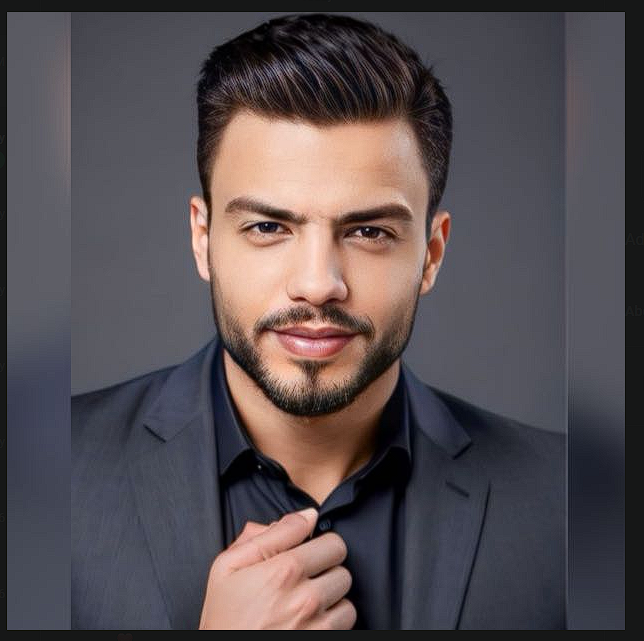

خبير متميز في قطاع الضيافة مع خلفية قوية في عمليات الأطعمة والمشروبات. أمتلك مهارات قيادية استثنائية في إدارة الفرق، خدمة العملاء، وتحقيق أهداف المبيعات مع الحفاظ على أعلى معايير الجودة العالمية.

سنوات من التميز
رضا العملاء
تفاصيل الخبرات العملية والقيادية الموثقة
التطوير المهني والشهادات المعتمدة
أكاديمية ماكدونالدز (McDonald's Academy)
يونيو - أغسطس 2022
التدريب الاحترافي على معايير سلامة الأغذية والتحكم في المخاطر.
المهارات الجوهرية التي تم صقلها عبر سنوات من الخبرة
بناء علاقات قوية ومستدامة مع العملاء وفريق العمل.
براعة في تقنيات البيع لزيادة الإيرادات مع تعزيز رضا العميل.
المساهمة في تطوير أداء الزملاء لضمان استمرارية التميز.
القدرة العالية على إدارة وتنظيم المناسبات والفعاليات داخل المنشأة.
متاح دائماً للتعاون المهني والفرص الجديدة